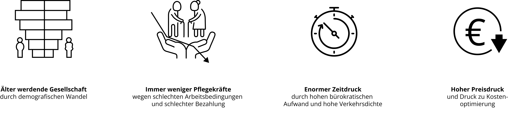
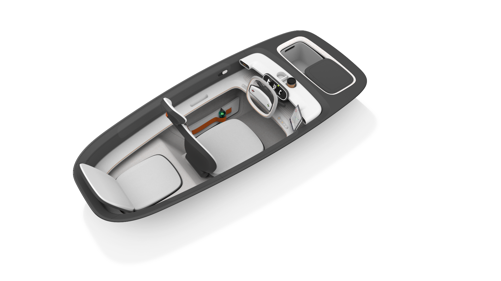
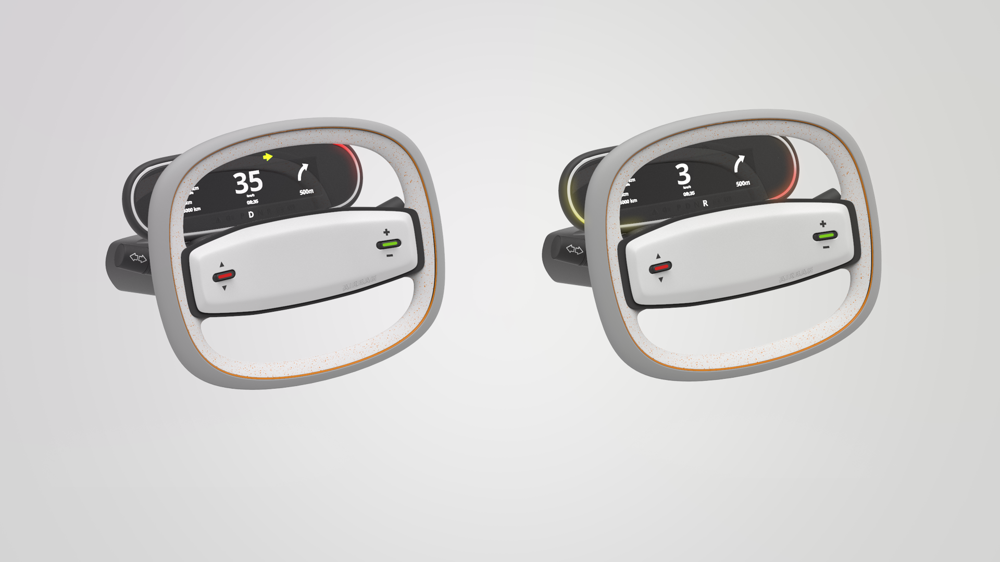
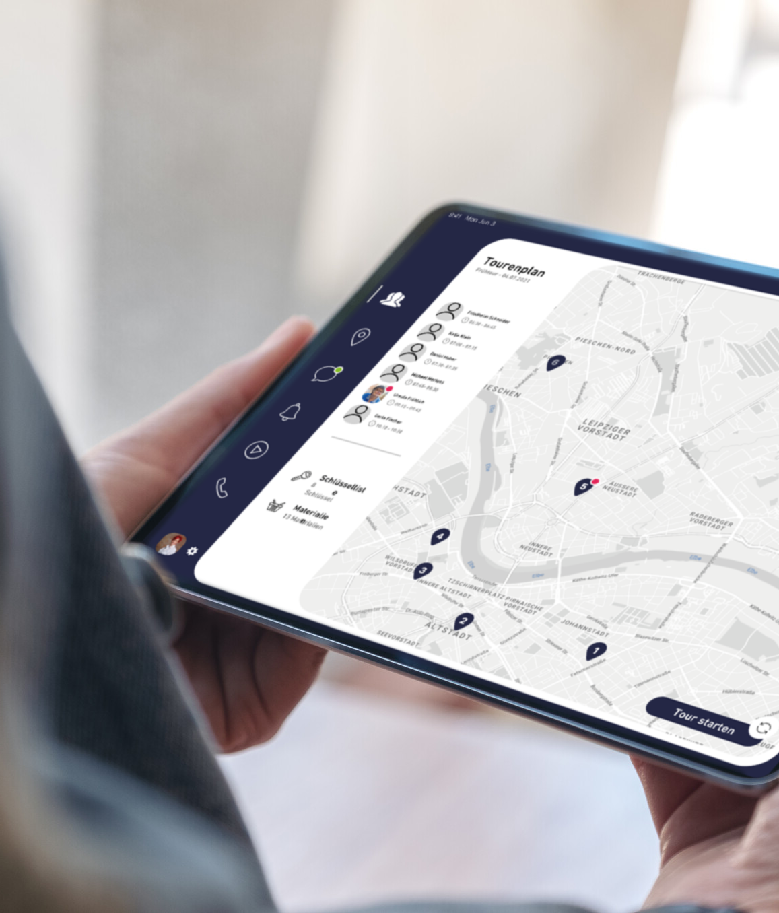

Background
Outpatient Care
Outpatient care is currently facing major challenges as well. An ever-increasing number of people in need of care is facing an
ever-shrinking number of skilled nursing staff. Solutions are needed that can make the profession more attractive and improve processes.

Vision
Specialized micro vehicle for outpatient care
In combination of these two topics, an electric mobility concept for caregivers is to be developed, which enables caregivers to optimally and reliably care for people in
need. The smallest possible footprint of the vehicle should ensure that destinations can be reached quickly even in heavy traffic and that space can
be found even in small parking spaces. The main focus was on the design of the driver-vehicle interaction in the interior.
Analysis
Stakeholder
Primary Persona
Ambulatory Care Nurse
"It's nice to do something good for the environment on the tour. But my work must not suffer.
Secundary Persona
Strategic Buyer
"Of course, the focus is on serviceability. In the end, however, the cost framework must also be adhered to.“
Concept Development
Concepts of interaction
- Modular Design
- display of information on care tablet
- switch between patient and navigation mode through intuitive interaction
- classic cockpit layout
- Situation-adaptive display
- display of information on main screen
- automatic switch between patient and navigation mode based on situation
- Head-Up-Display

Although the interior of the vehicle is very compact, measuring just 2.3 meters long and just under one meter wide, it
offers enough space for two people, as well as for necessary care materials and personal items.
An inset LED ring in the instrument cluster provides visual assistance when changing lanes, as well as when backing out of a parking space.

Result
Nursing app

The nursing app provides intuitive access to all relevant information. Even before the tour begins, the app, which clearly displays important information,
can make it easier to prepare for the tour. Important data is synchronized in real time and can thus be viewed at any time via the nursing tablet.
Caregivers are thus guided safely through upcoming changes in the care tour and gain confidence in implementation.
In patient mode in landscape format, a structured overview provides the most important information at first glance, such as patients to be approached, material and key lists.
When the journey begins, you can switch to navigation mode with a limited range of functions by simply turning the device to portrait format.